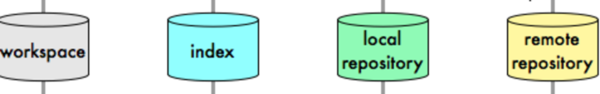
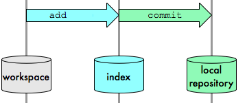
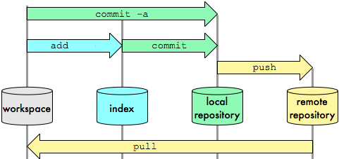
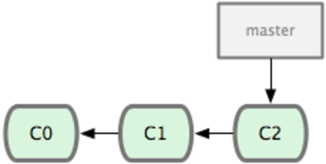
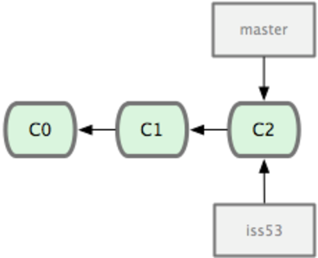
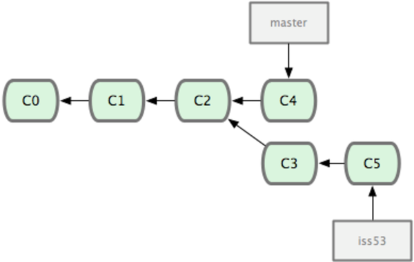
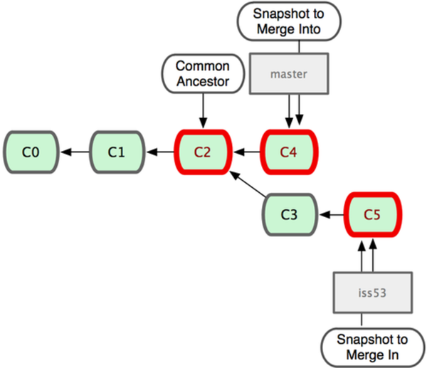
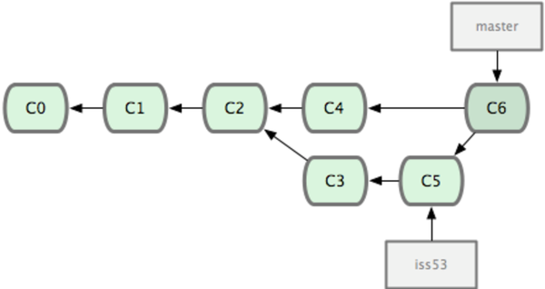

1 What is a Revision Control System?
Revision control (an aspect of software configuration management), is the management of changes to documents, computer programs, large web sites, and other collections of information. Wikipedia
In other words: it's a tool that helps you with your code files, and with several version of such files.
These systems are known under many names * version control system (VCS) * source code manager (SCM) * revision control system (RCS)
In german they are most commonly called * Versionskontrollsystem
1.1 A short - and incomplete - history
Some ancient systems that are no longer in use are:
- RCS
- CVS
These systems are open source systems that are still in use today:
- SVN, also called Subversion
- Hg, also called Mercurial
- Git
1.2 Why use revision control?
- The whole history of the project always accessible
- You can try out stuff without danger of breaking anything
- For teamwork - several people can program on separate computers, the system helps with merging the differnet codes
1.3 Why use git?
 photo cc
photo cc
- git was invented by linus torvalds, see this video of a talk by him
- is is used to manage the linux kernel
- git is a distributed vcs
- you can work online and offline
- its architecture is not fixed: e.g. move to new central server
- branching and merging is easy
- all the data is saved in only one directory: .git
- integrity of the code: identified by SHA1
1.4 Why use github.com?
- it's free for open source projects
- it offers a convenient web interface
- with forking + pull requests it offers a good way how to contribute to open soruce projects
- it's mascopt is cute: octocat

1.5 Resources for Learning Git
- http://git-scm.com/documentation
- http://progit.org/book/
- http://help.github.com/
- Loelinger(2009): Version Control with Git. O'Reilly Media.
- Swicegood(2009): Pragmatic Version Control Using Git. Pragmatic Bookshelf.
2 Git Basics
Where is my code? There are four answers to this question, for "places" that you need to learn about:

- the workspace is what you see in your on file system
- the index is an invisible space where you can add files you want to commit
- you can always commit to your local repository - it's really stored in the .git folder
- the remote repository may not be reachable all the time
2.1 Configuring Git
- command "git config"
- for project: stored in .git/config
- for user: is stored in ~/.gitconfig
- use flag --global for user
$ git config --global user.name "Firstname Lastname" $ git config --global user.email "me@fh-salzburg.ac.at" $ git config --list --global # user.name=Firstname Lastname # user.email=me@fh-salzburg.ac.at
2.2 Create a Repository from scratch
cd project_directory git init # creates subdirectory .git # repository is stored in there # .git/config
Windows Only: line breaks?
Some configs you might want to set
core.autocrlf false core.editor "C:/Programme/Notepad++/Notepad++.exe"
Aliases
git config --global alias.co checkout # you now can use git co master # instead of git checkout master
2.3 Plain git Workflow
# what's up? git status # i've edited a file git add FILE # i've edited a lot of files git add . git commit -m "describe the commit"
2.4 Index / Staging area

Workspace ("working copy") is managed by git!
2.5 content, not file!
# change file git add file # change file again git status git diff git diff --staged
the first change has beed staged, but not the second!
2.6 delete file
- deleting file from workspace alone is not enough
- opposite of "git add" is "git rm"
git rm FILE
2.7 rename file
git mv SOURCE DESTINATION
2.8 remotes
git add remote origin https://github.com/myname/myrepository.git
2.9 clone an existing repository
git clone REPOSITORY_URL git clone REPOSITORY_URL DIR_NAME
- implicitly sets
git remote add origin REPOSITORY_URL
2.10 add a remote
git remote add REMOTE_NAME REMOTE_URL git remote add origin ssh://repos.mediacube.at/opt/git/username.git git remote add github git@github.com:bjelline/web-engineering-textbook.git
2.11 workflow with remote

2.12 push
- specify local branch and remote repository
git push origin master
2.13 pull
- specify local branch and remote repository
git pull origin master
3 Branching and Merging
3.1 Branching
git branch -v # shows branches * master 7a98805 Merge branch 'iss49' iss50 782fd34 add scott to the author list in the readmes # create a branch git branch BRANCH_NAME # delete a branch git branch -d BRANCH_NAME # get data from a different branch git checkout BRANCH_NAME # shortcut: create a new branch + checkout git checkout -b foo
3.2 Basic workflow
before we branch

3.3 create a new branch
$git checkout -b iss53

3.4 switch to a branch
$git checkout iss53
3.5 which branch am I on?

3.6 work
# edit; commit(c3) $ git checkout master # edit; commit(c4) $ git checkout iss53 # edit; commit(c5)


3.7 merge!
$ git checkout master $ git merge iss53 Merge made by recursive. README | 1 + 1 files changed, 1 insertions(+), 0 deletions(-)
3.8 done

3.9 delete branch
git branch -d iss53
3.10 Merging in detail
git merge OTHER_BRANCH
merge the OTHER_BRANCH into the current (checked-out) branch
3.11 Conflicts
- when both branches contain changes for the same file
- or: trying two pushes containing changes for the same file
$ git status index.html: needs merge # On branch master # Changed but not updated: # (use "git add <file>..." to update what will be committed) # (use "git checkout -- <file>..." to discard changes in working directory) # # unmerged: index.html #
3.12 conflict markers in a file
</div> <<<<<<< HEAD:index.html <footer>contact: support@github.com</footer> ======= <div id="footer"> please contact us at support@github.com </div> >>>>>>> iss53:index.html </body> </html>
3.13 conflict markers in a files

3.14 how to resolve
- for all files:
- edit file
- try out your changes!
- git add FILE
- git commit